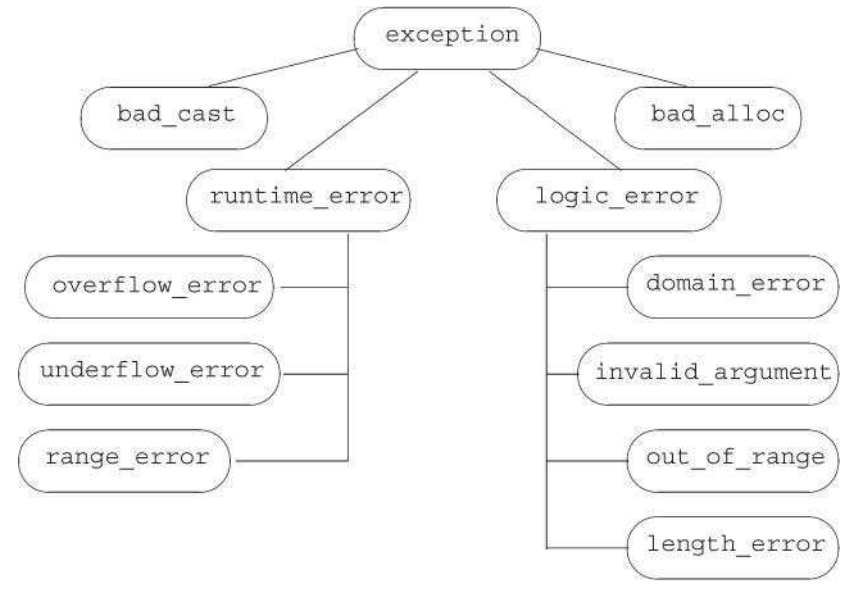

C++ Primer 第 IV 部分 高级主题
目录
第 17 章 标准库特殊设施
17.1 tuple 类型
tuple 是类似 pair 的模板。每个 pair 的成员类型都不相同，但每个 pair 都恰好有两个成员。不同 tuple 类型的成员类型也不相同，但一个 tuple 可以有任意数量的成员。每个确定的 tuple 类型的成员数目是固定的，但一个 tuple 类型的成员数目可以于另一个 tuple 类型不同。下表列出了 tuple 支持的操作。tuple 类型及其伴随类型和函数都定义在 tuple 头文件中
| tuple<T1, T2, …, Tn> t; | t 是一个 tuple，成员数为 n，第 i 个成员的类型为 Ti，所有成员都进行值初始化 |
| tuple<T1, T2, …, Tn> t(v1, v2, …, vn); | t 是一个 tuple，成员类型为 T1…Tn，每个成员用对应的初始值 vi 进行初始化。此构造函数是 explicit 的 |
| make_tuple(v1, v2, …, vn) | 返回一个用给定初始值初始化的 tuple。tuple 的类型从初始值的类型推断 |
| t1 == t2 | 当两个 tuple 具有相同数量的成员且成员对应相等时，两个 tuple 相等。 |
| t1 != t2 | 这两个操作使用成员的==运算符来完成。一旦发现某对成员不等，接下来的成员就不用比较了 |
| t1 relop t2 | tuple 的关系运算符使用字典序。两个 tuple 必须具有两同数量的成员。使用<运算符比较 t1 的成员和 t2 中的对应成员 |
| get<t>(t) | 返回 t 的第 i 个数据成员的引用；如果 t 时一个左值，结果时一个左值引用；否则，结果时一个右值引用。tuple 的所有成员都是 public 的 |
| tuple_size<tupleType>::value | 一个类模板，可以通过 tuple 类型来初始化。它有一个名为 value 的 public constexpr static 数据成员，类型为 size_t，表示给定 tuple 类型中成员的数量 |
| tuple_element<i, tupleType>::type | 一个类模板，可以通过一个整型常量和一个 tuple 类型来初始化。它有一个名为 type 的 public 成员，表示给定 tuple 类型中指定成员的类型 |
Note：
我们可以将 tuple 看作一个“快速而随意”的数据结构。
17.1.1 定义和初始化 tuple
关系和相等运算符
Note：
由于 tuple 定义了<和==运算符，我们可以将 tuple 序列传递给算法，并且可以在无序容器中将 tuple 作为关键字类型。
17.1.2 使用 tuple 返回多个值
tuple 的一个常见用途时从一个函数返回多个值。
17.2 bitset 类型
在 4.8 节中我们介绍了将整型运算对象当作二进制位集合处理的一些内置运算符。标准库还定义了 bitset 类，使得位运算符的使用更加容易，并且能够处理超过最长整型类型大小的位集合。bitset 类定义在头文件 bitset 中。
17.2.1 定义和初始化 bitset
下表列出了 bitset 的构造函数。bitset 类时一个类模板，他类似 array 类，具有固定的大小。当我们定义个 bitset 时，需要声明它包含多少个二进制位：
bitset<32> bitvec(1U); // 32 位；低位为1，其他位为0
大小必须时一个常量表达式。这条语句定义 bitvec 为一个包含 32 位的 bitset。就像 vector 包含未命名的元素一样，bitset 中的二进制位也是未命名的，我们通过位置来访问它们。二进制的位置是从 0 开始编号的。因此，bitvec 包含编译从 0 到 31 的 32 个二进制位。编号从 0 开始的二进制位被称为 低位(low-order) ，编编号到 31 结束的二进制位被称为 高位(high-order) 。
| bitset<n> b; | b 有 n 位；每一位均为 0，此构造函数是一个 constexpr |
| bitset<n> b(u); | b 是 unsigned long long 值 u 的低 n 位的拷贝。如果 n 大于 unsigned long long 的大小，则 b 中超出 unsigned long long 的高位被置位 0。此构造函数是一个 constexpr |
| bitset<n> b(s, pos, m, zero, one); | b 是 string s 从位置 pos 开始 m 个字符的拷贝。s只能包含字符 zero 或 one；如果 s 包含任何其他字符，构造函数会抛出 invaid_argument 异常。 |
| 字符在 b 中分别保存为 zero 和 one，pos 默认为 0，m 默认为 string::npos，zero 默认为'o'，one 默认为'1' | |
| bitset<n> b(cp, pos, m, zero, one); | 与上一个构造函数相同，但从 cp 指向的字符数组中拷贝字符，如果未提供 m，则 cp 必须指向一个 C 风格字符串。如果提供了 m，则 cp 开始必须至少有 m 个 zero 或 one 字符 |
接受一个 string 或一个字符指针的构造函数是 explicit 的。在新标准中增加了为 0 和 1 执行其他字符的功能。
用 unsigned 值初始化 bitset
当我们使用一个整型值来初始化 bitset 时，此值将被转换为 unsigned long long 类型并被当作位模式来处理。bitset 中的二进制位将是此模式的一个副本。如果 bitset 的大小大于一个 unsigned long long 中的二进制位数，则剩余的高位被置位 0。如果 bitset 的大小小于一个 unsigned long long 中的二进制位数，则只使用给定值中的低位，超出 bitset 大小的高位被丢弃：
// bitvec1比初始值小；初始值中的高位被丢弃 bitset<13> bitvec1(0xbeef); // 二进制位序列为1111011101111 // bitvec2比初始值大；它的高为被置位0 bitset<20> bitvec2(0xbeef); // 二进制位序列为00001011111011101111 // 在64位机器中，long long 0ULL是64个0比特，因此~0ULL是64个1 bitset<64> bitvec3(~0ULL); // 0-63位为1；63-127位为0
从一个 string 初始化 bitset
我们可以从一个 string 或字符数组指针来初始化 bitset。两种情况下，字符都直接表示位模式。与往常一样，当我们使用字符串表示数时，字符串中下标最小的字符对应高位，反之亦然：
bitset<32> bitvec4("1100"); // 2、3两位为1，剩余两位为0
如果 string 包含的字符数比 bitset 少，则 bitset 的高位被置位 0。
Note：
string 的下标编号习惯与 bitset 恰好相反；string 中下标最大的字符（最右字符）用来初始化 bitset 中的低位（下标为 0 的二进制位）。当你用一个 string 初始化一个 bitset 时，要记住这个差别。
17.2.2 bitset 操作
bitset 操作定义了多种检测或设置一个或多个二进制位的方法。bitset 类还支持我们在 4.8 节中介绍过的位运算符。这些运算符用于 bitset 对象的含义与内置运算符用于 unsigned 运算对象相同。
| b.any() | b 中是否存在置位的二进制位 |
| b.all() | b 中所有位都置位了吗 |
| b.none() | b 中不那在置位的二进制位吗 |
| b.count() | b 中置位的位数 |
| b.size() | 一个 constexpr 函数，返回 b 中的位数 |
| b.test(pos) | u 哦 pos 位置的位是置位的，则返回 true，否则返回 false |
| b.set(pos,v) | 将位置 pos 处的位设置为 bool 值 v。v 默认为 true。 |
| b.set() | 如果未传递实参，则将 b 中所有位置位 |
| b.reset() | 将位置 pos 处的位复位或将 b 中所有位复位 |
| b.reset() | |
| b.flip(pos) | 改变位置 pos 处的位的状态或改变 b 中每一位的状态 |
| b.flip() | |
| b[pos] | 访问 b 中位置 pos 处的位；如果 b 是 const 的，则当该位置位时 b[pos]返回一个 bool 值 true，否则返回 false |
| b.to_ulong() | 返回一个 unsigned long 或一个 unsigned long long 值，其位模式与 b 相同。如果 b 中位模式不能放入指定的结果类型，则抛出一个 overflow_error 异常 |
| b.to_ullong() | |
| b.to_string(zero, one) | 返回一个 string，表示 b 中的位模式。zero 和 one 的默认值分别为 0 和 1，用来表示 b 中的 0 和 1 |
| os << b | 将 b 中二进制打印为字符 1 或 0，打印到流 os |
| is >> b | 从 is 读取字符存入 b。当下一个字符不是 1 或 0 时，或是已经读入 b.size()个位时，读取过程停止 |
count、size、all、any 和 none 等几个操作都不接受参数，返回整个 bitset 的状态。其他操作——set、reset 和 flip 则改变 bitset 的状态。改变 bitset 状态的成员函数都是重载的。对每个函数，不接受参数的版本对整个集合执行给定的操作：接受一个位置参数的版本则对指定位执行操作。
下标运算符对 const 属性进行了重载，const 版本的下标运算符在指定位置时返回 true，否则返回 false。非 const 版本返回 bitset 定义的一个特殊类型，它允许我们操纵指定位的值：
bitvec[0] = 0; // 将第一位复位 bitvec[31] = bitvec[0]; // 将最后一位设置为与第一位一样 bitvec[0].flip(); // 翻转第一位 ~bitvec[0]; // 等价操作，也是翻转第一位 bool b = bitvec[0]; // 将bitvec[0]的值转换为bool类型
提取 bitset 的值
to_ulong 和 to_ullong 操作都返回一个值，保存了与 bitset 对象相同的位模式。只有当 bitset 的大小小于等于对应的大小（to_ulong 为 unsigned long，to_ullong 为 unsigned long long）时，我们才能使用这两个操作。
Note：
如果 bitset 中的值不能放入给定类型中，则这两个操作会抛出一个 overflow_error 异常。
bitset 的 IO 运算符
输入运算符从一个输入流读取字符，保存到一个临时的 string 对象中。直接读取的字符数达到对应 bitset 的大小时，或是遇到不是 1 或 0 的字符时，或是遇到文件尾或输入错误时，读取过程才对停止。随即用临时 string 对象来初始化 bitset。如果读取的字符小于 bitset 的大小，则与往常一样，高位将被置位 0.
17.3 正则表达式
我们重点介绍如果使用 C++正则表达式库（RE 库），它是新标准库的一部分。RE 库定义在头文件 regex 中，它包含多个组件。
| regex | 表示有一个正则表达式的类 |
| regex_match | 将一个字符序列与正则表达式匹配 |
| regex_search | 寻找第一个与正则表达式匹配的子序列 |
| regex_replace | 使用给定格式替换一个正则表达式 |
| sregex_iterator | 迭代器适配器，调用 regex_search 来遍历一个 string 中所有匹配的子串 |
| smatch | 容器类，保存在 string 中搜索的结果 |
| ssub_match | string 中匹配的子表达式的结果 |
regex 类表示一个正则表达式。除了初始化和赋值之外，regex 还支持其他一些操作。
函数 regex_match 和 regex_search 确定一个给定字符序列与一个给定 regex 是否匹配。如果整个输入序列与表达式序列匹配，则 regex_match 函数返回 true；如果输入序列中有一个子串与表达式匹配，则 regex_search 函数返回 true。还有一个 regex_replace 函数，我们将在 17.3.4 节中介绍。
下表列出了 regex 的函数参数。这些函数都返回 bool 值，且都被重载了：其中一个版本接受一个类型为 smatch 的附加参数。如果匹配成功，这些函数将成功匹配的相关信息保存在给定的 smatch 对象中。
| 注意：这些操作返回 bool 值，指出是否找到 i 匹配。 | |
| (seq, m, r, mft) | 在字符序列 seq 中查找 regex 对象 r 中的正则表达式。seq 可以是一个 string、表是范围的一堆迭代器以及一个指向空字符结尾的字符串数组的指针 |
| (seq, r, mft) | m 是一个 match 对象，用来保存匹配结果的相关细节。m和 seq 必须具有兼容的类型（参见 17.3.1 节） |
| mft 是一个可选的 regex_constants::match_flag_type 值。表 17.13 描述了这些值，他们会影响匹配过程 |
17.3.1 使用正则表达式库
指定 regex 对象的选项
当我们定义一个 regex 或是对一个 regex 调用 assign 为其赋予新值时，可以指定一些标志来影响 regex 如何操作。这些标志控制 regex 对象的处理过程。下标列出的最后 6 个标志指出编写正则表达式所用的语言。对这 6 个标志，我们必须设置其中之一，且只能设置一个。默认情况下，ECMAScript 标志被设置，从而 regex 会使用 ECMA-262 规范，这也是很多 Web 浏览器所使用的正则表达式语言。
| regex r(re) | re 表是一个正则表达式，它可以是一个 string、一个表示字符范围的迭代器对、一个指向空字符结尾的字符数据的指针、一个字符指针 h 额一个计数器或是一个花括号包围的字符列表。 |
| regex r(re, f) | f 是指出对象如何处理的标志。f通过下面列出的值来设置。如果未指定 f，其默认值为 ECMAScript |
| r1 = re | 将 r1 中的正则表达式替换为 re。re 表是一个正则表达式，它可以是另一个 regex 对象、一个 string、一个指向空字符结尾的字符数组的指针或一个花括号包围的字符列表 |
| r1.assign(re, f) | 与使用赋值运算符（=）效果相同；可选的标志 f 与 regex 的构造函数中对应的参数含义相同 |
| r.mark_count() | r 中子表达式的数目（我们将在 17.3.3 节中介绍） |
| r.flags() | 返回 r 的标志集 |
| 注：构造函数和赋值操作可能会包出类型为 regex_error 的异常 | |
| 定义 regex 时指定的标志 | |
| 定义在 regex 和 regex_constants::syntax_option_type 中 | |
| icase | 在匹配过程中忽略大小写 |
| nosbus | 不保存匹配的子表达式 |
| optimize | 执行速度优于构造速度 |
| ECMAScript | 使用 ECMA-262 指定的语法 |
| basic | 使用 POSIX 基本的正则表达式语法 |
| extended | 使用 POSIX 扩展的正则表达式语法 |
| awk | 使用 POSIX 版本的 awk 语言的语法 |
| grep | 使用 POSIX 版本的 grep 的语法 |
| egrep | 使用 POSIX 版本的 egrep 的语法 |
指定或使用正则表达式时的错误
我们可以将正则表达式本身看作用一种简单程序设计语言编写的“程序”。这种语言不是由 C++编译器解释的。正则表达式是在运行时，当一个 regex 对象被初始化或被赋予一个新模式时，才被“编译”的。与任何其他程序设计语言一样，当我们用这种语言编写正则表达式也可能有错误。
Note：
需要意识到的非常重要的一点是，一个正则表达式的语法是否正确是在运行时解析的。
如果我们编写的正则表达式存在错误，则在运行时标准库会抛出一个类型为 regex_error 的异常。类似标准异常类型，regex_error 有一个 what 操作来描述发生了什么错误。regex_error 还有一个名为 code 的成员，用来返回某个错误类型对应的数值编码。code 返回的值是由具体实现定义的。RE 库能抛出的标准错误如下表所示：
try { // 错误：alnum漏掉了右括号，构造函数会抛出异常 regex r("[[:alnum:]+\\.(cpp|cxx|cc)$", regex::icase); } catch (regex_error e) { cout << e.what() << "\ncode:" << e.code() << endl; }
| 定义在 regex 和 regex_constants::error_type 中 | |
| error_collate | 无效的元素校对请求 |
| error_ctype | 无效的字符类 |
| error_escape | 无效的转义字符或无效的尾置转义 |
| error_backref | 无效的向后引用 |
| error_brack | 不匹配的方括号（[或]） |
| error_paren | 不匹配的小括号（(或)） |
| error_brace | 不匹配的花括号（{或}） |
| error_badbrace | {}中无效的范围 |
| error_range | 无效的字符范围（如[z-a]） |
| error_space | 内存不足，无法处理此正则表达式 |
| error_badrepeat | 重复字符（*、?、+或{）之前没有有效的正则表达式 |
| error_complexity | 要求的匹配过于复杂 |
| error_stack | 栈空间不足，无法处理分配 |
我们的编译器定义了 code 成员，返回比上表列出的错误类型的编号，与往常一样，编号从 0 开始。
建议：避免创建不必要的正则表达式
如我们所见，一个正则表达式所表是的“程序”是在运行时而非编译时编译的。正则表达式的编译是一个非常慢的操作，特别时在你使用了扩展的正则表达式语法或复杂的正则表达式时。因此，构造一个 regex 对象以及向一个已存在的 regex 赋予一个新的正则表达式大可能时非常耗时的。为了最小化这种开销，你应该努力避免创建很多不必要的 regex。特别是，如果你在一个循环中使用正则表达式，应该在循环外创建它，而不是在每步迭代时都编译它。
正则表达式和输入序列类型
我们可以搜索多种类型的输入序列。输入可以是普通 char 数据或 wchar_t 数据，字符可以保存在标准库 string 中或是 char 数组中（或是宽字符版本，wstring 或 wchat_t 数组中。RE 为这些不同的输入序列类型都定义了对应的类型。
例如，regex 类保存类型 char 的正则表达式。标准库还定义了一个 wregex 诶保存类型 wchar_t，其操作与 regex 完全相同。两种唯一的差别是 wregex 的初始值必须使用 wchar_t 而不是 char。
匹配和迭代器类型（我们将在下面小节中介绍）更为特殊。这些类型的差异不仅在于字符类型，还在于序列是在标准库 string 中还是在数组中：smatch 表示 string 类型的输入序列；cmatch 表示字符数组序列；wsmatch 表示宽字符串（wstring）输入；而 wcmatch 表示宽字符数组。
重点再与我们使用的 RE 库类型必须与输入序列类型匹配。下标列出了 RE 库类型与输入序列类型的对应关系。
| 如果输入序列类型 | 则使用正则表达式 |
|---|---|
| string | regex、smatch、ssub_match 和 sregex_iterator |
| const char* | regex、cmatch、csub_match 和 cregex_iterator |
| wstring | wregex、wsmatch、wssub_match 和 wsregex_iterator |
| const wchar_t* | wregex、wcmatch、wcsub_match 和 wcregex_iterator |
17.3.2 匹配与 Regex 迭代器类型
regex 迭代器是一种迭代器适配器（参见 9.6 节），被绑定到一个输入序列和一个 regex 对象上。如上表所述，每种不同的输入序列类型都有对应的特殊 regex 迭代器类型。迭代器操作如下表所述。
| 这些操作也适用于 cregex_iterator、wsregex_iterator 和 wcregex_iterator | |
| sregex_iterator | 一个 sregex_iterator，遍历迭代器 b 和 e 指定的 string |
| it(b, e, r) | 它调用 sregex_search(b, e, r)将 it 定位到输入中第一个匹配的位置 |
| sregex_iterator end; | sregex_iterator 的尾后迭代器 |
| *it | 根据最后一个调用 regex_search 的结果，返回一个 smatch 对象的引用或一个指向指向 smatch 对象的指针 |
| it-> | |
| ++it | 从输入序列当前匹配尾值开始调用 regex_search。前置版本返回递增后迭代器；后置版本返回旧值 |
| it++ | |
| it1 == it2 | 如果两个 sregex_iterator 都是尾后迭代器，则他们相等。如果两个非尾后迭代器都是从相同的输入序列和 regex 对象构造，则它们相等 |
当我们将一个 sregex_iterator 绑定到一个 string 和一个 regex 对象时，迭代器自动定位到给定 string 中第一个匹配尾值。即，sregex_iterator 构造函数对给定 string 和 regex 调用 regex_search。当我们解引用迭代器时，会得到一个对应最近一次搜索结果的 smatch 对象。当我们递增迭代器时，它调用 regex_search 在输入 string 中查找下一个匹配。
使用匹配数据
| 这些操作也适用于 cmatch、wsmatch、wcmatch 和对应的 csub_match、wssub_match 和 wcsub_match | |
| m.ready() | 如果已经通过调用 regex_search 或 regex_match 设置了 m，则返回 true；否则返回 false，如果 ready 返回 false，则对 m 进行操作时未定义的 |
| m.size() | 如古匹配失败，则返回 0；否则返回最近一次匹配的正则表达式中子表达式的数目 |
| m.empty() | 若 m.size()为 0，则返回 true |
| m.prefix() | 一个 ssub_match 对象，表示当前匹配之前的序列 |
| m.suffix() | 一个 ssub_match 对象，表示当前匹配之后的部分 |
| m.format(…) | 见表 17.12 |
| 在接受一个索引的操作中，n的默认值为 0 且必须小于 m.szie()。 | |
| 第一个子匹配（索引为 0）表示整个匹配 | |
| m.length(n) | 第 n 个匹配的子表达式的大小 |
| m.position(n) | 第 n 个子表达式距序列开始的距离 |
| m.str(n) | 第 n 个子表达式 i 匹配的 string |
| m[n] | 对应第 n 个子表达式的 ssub_match 对象 |
| m.begin(),m.end() | 表示 m 中 sub_match 元素范围的迭代器。与往常一样，cbegin 和 cend 返回 const_iterator |
| m.cbegin(),m.cend() |
17.3.3 使用子表达式
正则表达式的模式通常包含一个或多个 子表达式 。一个子表达式时模式的一部分，本身也具有意义。正则表达式语法通常用括号表示子表达式。
// r有两个子表达式：第一个是点之前表示文件名的部分，第二个表示文件扩展名 regex r("([[:alnum:]]+)\\.(cpp|cxx|cc)$", regex::icase);
上述模式包含两个括号括起来的子表达式：
([[:alnum:]]+)，匹配一个或多个字符的序列(cpp|cxx+cc)，匹配文件扩展名
匹配对象除了提供匹配整体的相关信息外，还提供访问模式中每个子表达式的能力。子匹配是按位置来访问的。第一个子匹配位置为 0,表示整个模式对应的匹配，随后是每个子表达式对应的匹配。因此，本例模式中第一个子表达式，即表示文件名的子表达式，其位置为 1，而文件扩展名对应的子表达式位置为 2.
例如，如果文件名为 foo.cpp，则 results.str(0)将保存 foo.cpp；results.str(1)将保存 foo；而 results.str(2)将保存 cpp。
使用子匹配操作
| 注意：这些操作适用于 ssub_match、csub_match、wssub_match、wcsub_match。 | |
| matched | 一个 public bool 数据成员，指出此 ssub_match 是否匹配了 |
| first | public 数据成员，指向匹配函徐序列首元素和尾后位置的迭代器。如果未匹配，则 first 和 second 是相等的 |
| second | |
| legnth() | 匹配的大小。如果 matched 未 false，则返回 0 |
| str() | 返回一个包含输入中匹配部分的 string。如果 matched 为 false，则返回空 string |
| s = ssub | 将 ssub_match 对象 ssub 转换为 string 对象 s。等价于 s=ssub.str()。转换运算符不是 explicit 的 |
17.3.4 使用 regex_replace
正则表达式不仅用在我们希望查找一个给定序列的时候，还用在当我们想将找到的序列替换为另一个序列的时候。
当我们希望在输入序列中查找并替换一个正则表达式时，可以调用 regex_replace 。下表描述了 regex_replace，类似搜索函数，它接收一个输入字符序列和一个 regex 对象，不同的时，它还接受一个描述我们想要的输出形式的字符串
| m.format(dest,fmt,mft) | 使用格式字符串 fmt 生成格式化输出，匹配在 m 中，可选的 match_flag_type 标志在 mft 中。第一个版本写入迭代器 dest 指向的目的位置并接受 fmt 参数，可以是一个 string，也可以是表示字符数组中范围的一对指针。 |
| m.format(fmt,mft) | 第二个版本返回一个 string，保存输出，并接受 fmt 参数，可以是一个 string，也可以是一个指向空字符结尾的字符数组的指针。mft 的默认值为 format_defualt |
| regex_replace(dest,seq,r,fmt,mft) | 遍历 seq，用 regex_search 查找与 regex 对象 r 匹配的子串。使用格式字符串 fmt 和可选的 match_flag_type 标志来生成输出。第一个版本将输出写入到迭代器 dest 指定的位置，并接受一对迭代器 seq 表示范围。 |
| regex_replace(seq,r,fmt,mft) | 第二个版本返回一个 string，保存输出，且 seq 既可以是一个 string 也可以是一个指向空字符结尾的字符数组的指针。 |
| 在所有情况下，fmt 既可以是一个 string 也可以是一个指向空字符结尾的字符数组的指针，且 mft 的默认值为 match_defualt |
替换字符串由我们想要的字符组合与匹配的子串对应的子表达式而组成。我们用一个符号$后跟子表达式的索引号来表示一个特定的子表达式：
string fmt = "$2.$5.$7"; // 将号码格式改为ddd.ddd.dddd
用来控制匹配的格式的标志
就像标准库定义标志来指导如何处理正则表达式一样，标准库还定义了用来在替换过程中控制匹配或格式的标志。下表列出了这些值。这些标志可以传递给函数 regex_search 或 regex_match 或是类 smatch 的 format 成员。
匹配和格式化标志的类型为 match_flag_type。这些值都定义在名为 regex_constants 的命名空间中。类似用于 bind 的 placeholder（参见 10.3.4 节），regex_constants 也是命名空间 std 中的命名空间。为了使用 regex_constants 中的名字，我们必须在名字前同时加上两个命名空间限定符：
using std::regex_constants::format_no_copy;
| 定义在 regex_constants::match_flag_type 中 | |
| match_default | 等价于 format_default |
| match_not_bol | 不将首字符作为行首处理 |
| match_not_eol | 不将尾字符作为行尾处理 |
| match_not_bow | 不将首字符作为单词首处理 |
| match_not_eow | 不将尾字符作为单词尾处理 |
| match_any | 如果存在多余一个匹配，则可返回任意一个匹配 |
| matcn_not_null | 不匹配任何空序列 |
| match_continuous | 匹配必须从输入的首字符开始 |
| match_prev_avail | 输入序列必须包含第一个匹配之前的内容 |
| format_defualt | 用 ECMAScript 规则替换字符串 |
| format_sed | 用 POSIX sed 规则替换字符串 |
| format_no_copy | 不输出输入序列中未匹配的部分 |
| format_first_only | 只替换子表达式的第一次出现 |
17.4 随机数
程序通常需要一个随机数源。在新标准出现之前，C和 C++都依赖于一个简单的 C 库函数 rand 来生成随机数。此函数生成均匀分布的伪随机数整数，每个随机数的范围在 0 和一个系统相关的最大值（至少为 32767）之间。
rand 函数有一些问题：即使不是大多数，也有很多程序需要不同范围的随机数。一些应用需要随即浮点数。一些程序需要非均匀分布的数。而程序员为了解决着地写问题而试图转换 rand 生成的随机数的范围、类型或分布时，常常会引入非随机性。
定义在头文件 random 中的随机数库通过一组写作的类来解决这些问题： 随机数引擎类 和 随机数分布类 。下表描述了这些类。一个引擎类可以生成 unsigned 随机数序列，一个分布类使用一个引擎类生成指定类型的、在给定范围内的、服从特定概率分布的随即数。
| 引擎 | 类型，生成随机 unsigned 整数序列 |
| 分布 | 类型，使用引擎返回服从特定概率分布的随机数 |
Best Practies：
C++程序不应该使用库函数 rand，而而应使用 default_random_engine 类和恰当的分布类对象
17.4.1 随机数引擎和分布
随机数引擎是函数对象类（参见 14.8），它们定义了一个调用运算符，运算符不接受参数并返回并返回一个随机 unsigned 整数.我们可以通过调用一个随机数引擎对象来生成原始随机数。
default_random_engine e; // 生成随机无符号数 for (size_t i = 0; i < 10 ; ++i) // e() “调用”对象来生成下一个随机数 cout << e() << " ";
标准库定义了多个随机数引擎类，区别在于性能和随机性质量不同。每个编译器都会指定其中一个作为 default_random_engine 类型。此类型一般具有最常用的特性，下表列出了随机数引擎操作，标准库定义的引擎类型列在附录 A3.2 中。
| Engine e; | 默认构造函数；使用该引擎类型默认的种子 |
| Engine e(s); | 使用整型值 s 作为种子 |
| e.seed(s) | 使用种子 s 重值引擎的状态 |
| e.min() | 此引擎可生成的最小值和最大值 |
| e.max() | |
| Engine::result_type | 此引擎生成的 unsigned 整型类型 |
| e.discard(u) | 将引擎推进 u 补；u的链诶行为 unsigned long long |
分布类型和引擎
为了得到在一个指定范围内的数，我们使用一个分布类型的对象：
// 生成0到9之间（包含）均匀分布的随机数 uniform_int_distribution<unsigned> u(0,9); default_random_engine e; // 生成无符号随机数 for (size_t i = 0; i < 10; ++i) // 将u作为随机数源 // 每个调用返回在指定范围内并服从均匀分布的值 cout << u(e) << " ";
此处我们将 u 定义为 uniform_int_distribution<unsigned>。此类型生成均匀分布的 unsigned 值。当我们定义一个这种类型的对象时，可以提供想要的最小值和最大值。在此程序中，u(0,9)表示我们希望得到 0 到 9 之间（包含）的数。随机数分布类会使用博阿寒的范围，从而我们可以得到给定整型类型的每个可能值。
类似引擎类型，分布类型也是函数对象类。分布类型定义了一个调用运算符，它接受一个随机数引擎作为参数。分布对象使用它的引擎参数生成随机数，并将其映射到指定的分布。
注意，我们传递给分布对象的是引擎对象本身，即 u(e)。如果我们将调用写成 u(e())，含义变为将 e 生成的下一个值传递给 u，会导致一个编译错误。我们传递的是引擎本身，而不是它生成的下一个值，原因是某些分布可能需要调用引擎多次才能得到一个值。
Note：
当我们说 随机数发生器 时，是指分布对象和引擎对象的组合。
引擎生成一个数值序列
随机数发生器有一个特性经常会使新手迷惑：即使生成的数看起来像是随机的，但对一个给定的发生器，每次运行程序它都会返回相同的数值序列。序列不变这一事实在调试时非常有用。但另一方面，使用随机数发生器的程序也必须考虑这一特性。
WARNING：
一个给定的随机数发生器一直会生成相同的随机数序列。一个函数如果定义了局部的随机数发生器，应该将其（包括引擎和分布对象）定义为 static 的。否则，每次调用函数都会生成相同的序列。
设计随机数发生器种子
随机数发生器会生成相同的随机数序列这一特性在调试中很有用。但是，一旦我们的程序调试完毕，我们通常希望每次运行程序都会生成不同的随机结果，可以通过提供一个 种子 来达到这一目的。种子就是一个数值，引擎可以利用它从序列中一个新位置重新开始生成随机数。
为引擎设置种子有两种方式：在创建引擎对象时提供种子，或者 a 调用引擎的 seed 成员。
选择一个好的种子，与生成好的随机数所涉及的其他大多数事情相同，是极其困难的的。可能最常用的方式时调用系统函数 time。这个函数定义在头文件 ctime 中，它返回从一个特定时刻到当前经过了多少秒。函数 time 接受单个指针参数，它指向用于写入时间的数据结构。如果此指针为空，则函数简单地返回时间：
default_random_engine e1(time(0)); // 稍微随机些的种子
由于 time 返回以秒计的时间，因此这种方式只适用于生成种子的间隔为秒级或更长的应用。
WARNING：
如果程序作为一个自动过程的一部分反复运行，将 time 的返回值作为种子的方式就无效了；它可能多次使用的都是相同的种子。
17.4.2 其他随机数分布
生成随机实数
程序常需要一个随机浮点数的源。特别是，程序经常需要 0 到 1 之间的随机数。
最常用但不正确的从 rand 获取一个随机浮点数的方法时用 rand()的结果除以 RAND_MAX，即，系统定义的 rand 可以生成的最大随机数的上界。这种方法不正确的原因是随机整数的精度通常低于随机浮点数，这样，有一些浮点值就永远不会被生成了。
使用新标准库设施，可以很容易地获得随机浮点数。我们可以定义一个 uniform_real_distribution 类型的对象，并让标准库来处理从随机整数到随机浮点小树的映射。
| Dist d; | 默认构造函数；使 d 准备好被使用 |
| 其他构造函数依赖于 Dist 的类型；参见附录 A.3 | |
| 分布类型的构造函数是 explicit 的 | |
| d(e) | 用相同的 e 连续调用 d 的话，会根据 d 的分布是类型生成一个随机数序列；e是一个随机数引擎对象 |
| d.min() | 返回 d(e)能生成的最小值和最大值 |
| d.max() | |
| d.reset() | 重建 d 的状态，使得随后对 d 的使用不依赖于 d 已经生成的值 |
bernoulli_distribution 类
WARNING：
由于引擎返回相同的随机序列（参见 17.4.1 节），所以我们必须在循环外声明引擎对象。否则，每步循环都会创建一个新引擎，而从每步循环都会生成相同的值。类似的，分布对象也要保持状态，因此也应该在循环外定义。
17.5 IO 库再探
在第 8 章中我们介绍了 IO 库的基本结构及其最常用的部分。在本节中，我们将介绍三个更特殊的 IO 库特性：格式控制、未格式化 IO 和随机访问。
17.5.1 格式化输入与输出
除了条件状态外（参见 8.1.2 节），每个 iostream 对象还维护一个格式状态来控制 IO 如何格式化的细节。格式状态控制格式化的某些方面，如整型是几进制、浮点值的精度、一个输出元素的宽断等。
标准库定义了一组 操纵符 （参见 1.2 节）来修改流的格式状态。一个操作符 shingle 函数或是一个对象，会影响力流的状态，并能用作输入或输出运算符的运算符对象。类似输入和输出运算符，操纵符也返回它所处理的流对象，因此我们未可以在一条语句中组合操纵符和数据。
我们已经在程序使用过一个操纵符——endl，我们将它“写”到输出流，就像它是一个值一样。但 endl 不是一个普通值，而是一个操作：它输出一个换行符并刷新缓冲区。
很多操纵符改变格式状态
草丛服用于两大类输出控制：控制数值的输出形式以及控制补白的数量和位置。大多数改变格式状态的操纵符都是设置/复原成对的；一个操纵符用来将格式状态设置成新值，而另一个用来将其复原，恢复为正常的默认格式。
WARNING：
当操纵符改变流的格式状态时，通常改变后的状态对素有后续 IO 都生效。
当我们有一组 IO 操作希望使用相同的格式时，操纵符对格式状态的改变是持久的这一特性很有用。实际上，一些程序会利用操纵符的这一特性对其所有输入或输出重值一个或多个格式规则的行为。在这种情况下，操纵符会改变流这一特性就是满足要求了。
但是，很多重续（而且更重要的是，很多程序员）期望流的状态符合标准库正常的默认设置。在这些情况下，将流的状态置于一个非标准状态可能会导致错误。因此，通常最好在不再需要特殊格式时尽快将流恢复到默认状态。
指定整型值的进制
Note：
操纵符 hex、oct 和 dec 只影响整型运算符对象，浮点值的表示形式不受影响。
| boolalpha | 将 true 和 false 输出为字符串 |
| * noboolalpha | 将 true 和 false 输出为 1，0 |
| showbase | 对整型值输出表示进制的前缀 |
| * noshowbase | 不生成表示进制的前缀 |
| showpoint | 对浮点值总是显式小数点 |
| * noshowpoint | 只有当浮点值包含小数部分时才显示小数点 |
| showpos | 对非负数显示+ |
| * noshowpos | 对非负数不显示+ |
| uppercase | 在十六进制中打印 0X，在科学记数法中打印 E |
| * nouppercase | 在十六进制中打印 0x，在科学记数法中打印 e |
| * dec | 整型值显示为是禁止 |
| hex | 整型值显示为十六进制 |
| oct | 整型值显示为八进制 |
| left | 在值的右侧添加填充字符 |
| right | 在值的左侧添加填充字符 |
| internal | 在符号和值之间添加填充字符 |
| fixed | 浮点值显示为定点十进制 |
| scientific | 浮点值显示为科学记数法 |
| hexfloat | 浮点值显示为十六进制（C++11 新特性） |
| defaultfloat | 重值浮点数格式为十进制（C++11 新特性） |
| unitbuf | 每次输出操作后都刷新缓冲区 |
| * nounitbuf | 恢复正常的缓冲区刷新方式 |
| * shipws | 输入运算符跳过空白符 |
| noskipws | 输入运算符不跳过空白符 |
| flush | 刷新 ostream 缓冲区 |
| ends | 插入空字符，然后刷新 ostream 缓冲区 |
| endl | 插入换行符，然后刷新 ostream 缓冲区 |
| * 表示默认流状态 |
指定浮点数记数法
Best Practies：
除非你需要控制浮点数的表示形式（如，按列打印数据或打印表示金额或百分比的数据），否则由标准库选择记数法是最好的方式。
输出补白
当按列打印数据时，我们常常需要非常精细地控制数据格式。标准库提供了一些操纵符帮助我们完成所需的控制：
- setw 指定下一个数字或字符串值的最小空间。
- left 表示左对齐输出
- right 表示右对齐输出，右对齐是默认格式
- internal 控制负数的符号的位置，它左对齐符号，右对齐值，用空格填满所有中间空间。
- setfill 允许指定一个字符代替默认的空格来补白输出。
Note：
setw 类似 endl，不改变输出流的内部状态。它只决定了下一个输出的大小。
| setfill(ch) | 用 ch 填充空白 |
| setprecision(n) | 将浮点精度设置为 n |
| setw(w) | 读或写值的宽度为 w 个字符 |
| setbase(b) | 将整数输出为 b 进制 |
17.5.2 未格式化的输入/输出操作
到目前为止，我们的程序只使用过 格式化 IO 操作。输入和输出运算符（ << 和 >> ）根据读取或写入的数据类型来格式化它们。输入运算符忽略空白符，输出运算符应用补白、精度等规则。
标准库还提供了一组低层操作，支持 未格式化 IO 。这些操作允许我们将一个流当当作一个无解释的字节序列来处理。
单字节操作
有几个未格式化操作每次一个字节地处理流。这些操作列在下表中，它们会读取而不是忽略空白符。
| is.get(ch) | 从 istream is 读取下一个字节存入字符 ch 中。返回 is |
| os.put(ch) | 将字符 ch 输出到 ostream os，返回 os |
| is.get() | 将 is 的下一个字节作为 int 返回 |
| is.putback(ch) | 将字符 ch 放回 is。返回 is |
| is.unget() | 将 is 向后移动一个字节。返回 is |
| is.peek() | 将下一个字节作为 int 返回，但不从流中删除它 |
将字符放回输入流
有时我们需要读取一个字符才能知道还未准备好处理它。在这种情况下，我们希望将字符放回流中。标准库提供了三种方法退会字符，它们有着细微的差别：
- peek 返回输入流中下一个字符的副本，但不会将它从流中删除，peek 返回的值仍然在流中。
- unget 使得输入流向后移动，从而最后读取的值又回到流中。即使我们不知道最后从流中读取什么值，仍然可以有调用 unget。
- putback 是更特殊版本的 unget，它退回从流中读取的最后一个值，但它接受一个参数，此参数必须与最后读取的值想通
一般情况下，在读取下一个值之前，标准库保证我们可以退回最多一个值。即，标准库不保证在中间不进行读取操作的情况下能连续调用 pushback 或 unget。
从输入操作返回的 int 值
函数 peek 和无参的 get 版本都以 int 类型从输入流返回一个字符。这有些令人吃惊，可能这些函数返回一个 char 看起来会更自然。
这些函数返回一个 int 的原因是：可以返回文件尾标记。我们使用 char 范围中的每个值来表示一个真实字符，因此，取值范围中没有额外的值可以用来表示文件尾。
返回 int 的函数将它们要返回的字符先转换为 unsigned char，然后再将结果提升到 int。因此，即使字符集中有字符映射到负值，这些操作返回的 int 也是正值（参见 2.1.2 节）。而标准库使用负值表示文件尾，这样就可以保证与任何合法字符的值都不同。文件 cstdio 定义了一个名为 EOF 的 const，我们可以用它来检测从 get 返回的值是否是文件尾，而不必记忆表示文件尾的实际数值
多字节操作
一些未格式化 IO 操作一次处理大块数据。如果速度是要考虑的重点问题的话，这些操作是很重要的，但类似其他低层操作，这些操作也容易出错。特别是，这些操作要求我们自己分配并管理用来保存和提取数据的字符数组。下表列出了多字节操作。
| is.get(sink, size, delim) | 从 is 中读取最多 size 个字节，并保存在字符数组中，字符数组的起始地址由 sink 给出。读取过程直至遇到了字符 delim 或读取了 size 个字节或遇到文件尾时停止。 |
| 如果遇到了 delim，则将其留在输入流中，不读取出来存入 sink | |
| is.getline(sink, size, delim) | 与接受三个参数的 get 版本类似，但会读取并丢弃 delim |
| is.read(sink, size) | 读取最多 size 个字节，存入字符数组 sink 中。返回 is |
| is.gcount() | 返回上一个未格式化读取操作从 is 读取的字节数 |
| os.write(source, size) | 将字符数组 source 中的 size 个字节写入 os。返回 os |
| is.ignore(size, delim) | 读取并忽略最多 size 个字符，包括 delim。与其他未格式化函数不同，ignore 有默认参数；size 的默认值为 1，delim 的默认值为文件尾 |
get 和 getiline 函数接受相同的参数，它们的行为类型但不相同。这两个函数中，sink 都是一个 char 数组，用来保存数据。两个函数都一直读取数据，直至下面条件之一发生：
- 已读取了 size-1 字符
- 遇到了文件尾
- 遇到了分隔符
两个函数的差别是处理分隔符的方式：get 将分隔符留作 istream 中的下一个字符，而 getline 则读取并丢弃分隔符。无论哪个函数都不会将分隔符保存在 sink 中。
WARNING：
一个常见的错误是本想从流中删除分隔符，但却忘了做。
确定读取了多少个字符
某些操作从输入读取未知个数的字节。我们可以调用 gcount 来确定最后一个未格式化输入操作读取了多少个字符。应该在任何后续未格式化输入操作之前调用 gcount。特别是，将字符退回流的单字符操作也属于位格式化输入操作。如果在调用 gcount 之前调用了 peek、unget 或 puback，则 gcount 的返回值为 0。
17.5.3 流随机访问
虽然标准库为所有流类型都定义了 seek 和 tell 函数，单它们是否会做有意义的事情依赖于流绑定到哪个设备。在大多数系统中，绑定到 cin、cout、cerr 和 clog 的流不支持随机访问——毕竟，当我们向 cout 直接输出数据时，类似向回跳十个尾值这种操作是没有意义的。对这些流我们可以调用 seek 和 tell 函数，单在运行时会出错，将流置于一个无效状态。
WARNING：
由于 istream 和 ostream 类型通常不支持随机访问，所以本节剩余内容只用于 fstream 和 sstream 类型。
seek 和 tell 函数
为了支持随机访问，IO 类型维护一个标记来确定下一个读写操作要在哪里进行。它们还提供了两个函数：一个函数通过将标记 seek 到一个给定位置来重新定位它；另一个函数 tell 我们标记的当前位置。标准库实际上定义了两对 seek 和 tell 函数，如下表所示。一对用于输入流，另一对用于输出流。输入和输出版本的差别在于名字的后缀是 g 还是 p。g 版本表示我们正在“获取”（读取）数据，而 p 版本表示我们正在“放置”（写入）数据。
| tellg() | 返回一个输入流中（tellg）或输出流中（tellp）标记的当前位置 |
| tellp() | |
| seekg(pos) | 在一个输入流或输出流中将标记重定位到给定的绝对地址。pos 通常是前一个 tellg 或 tellp 返回的值 |
| seekp(pos) | |
| seekp(off, from) | 在一个输入流或输出流中将标记定位到 from 之前或之后 off 个字符，from 可能是下列值之一 |
| - beg，偏移量相对于流开始位置 | |
| - cur，偏移量相对于流当前位置 | |
| - end，偏移量相对于流结尾位置 |
只有一个标记
标准库区分 seek 和 tell 函数的“放置”和“获得”版本这一特性可能会导致误解，即使标准库进行了区分，但它在一个流中只维护单一的标记——并不存在独立的读标记和写标记。
Note：
由于只有单一的标记，因此只要我们在读写操作间切换，就必须进行 seek 操作来重定位标记。
第 18 章 用于大型程序的工具
与仅需几个程序员就能开发完成的系统相比，大规模编程对程序设计语言的要求更高。大规模应用程序的特殊要求包括：
- 在独立开发的子系统之间协同处理错误的能力。
- 使用各种库（可能包含独立开发的库）进行协同开发的能力。
- 对比较复杂的应用概念建模的能力。
本章介绍的三种 C++语言特性正好满足上述要求，它们是：异常处理、命名空间和多重继承。
18.1 异常处理
异常处理 机制允许程序中独立开发的部分能够在运行时就出现的问题进行通信并做出相应的处理。异常时的我们能够将问题的检测与解决过程分离开来。程序的一部分负责检测问题的出现，然后解决该问题的任务传递给程序的另一部分。检测环节无序知道问题处理模板的所以细节，反之亦然。
18.1.1 抛出异常
在 C++语言中，我们通过 抛出 一条表达式来 引发 一个异常。被抛出的表达式的类型以及当前的调用链共同决定了哪段 处理代码 将被用来处理该异常。被选中的处理代码是在调用链中 与抛出对象类型匹配的最近的处理代码。其中，根据抛出对象的类型和内容，程序的异常抛出部分将会告知异常处理部分到底发生了什么错误。
当执行一个 throw 时，跟在 throw 后面的语句将不再被执行。相反，程序的控制权从 throw 转移到与之匹配的 catch 模块。该 catch 可能时同一个函数的局部 catch，也可能位于直接或间接调用了发生异常的函数的另一个函数中。控制权从一处转移到另一处，这有两个重要的含义：
- 沿着调用链的函数可能会提早退出。
- 一旦程序开始执行异常处理代码，则沿着调用链创建的对象将被销毁
因为跟在 throw 后面的语句将不再被执行，所以 throw 语句的用法有点类型于 return 语句：它通常作为条件语句的一部分或者作为某个函数的最后（或者唯一）一条语句。
栈展开
当抛出一个异常后，程序暂停当前函数的执行过程并立即开始寻找与异常匹配的 catch 子句。当 throw 出现在一个 try 语句块 内时，检查与该 try 块关联的 catch 子句。如果找到了匹配的 catch，就使用该 catch 处理异常。如果这一步没找到匹配的 catch 且该 try 语句嵌套在其他 try 块中，则继续检查与外层 try 匹配的 catch 语句。如果还是找不到匹配的 catch，则退出当前的函数，在调用当前函数的外层函数中继续寻找。
如果对抛出异常的函数的调用语句位于一个 try 语句块内，则检查与该 try 块关联的 catch 子句。如果找到了匹配的 catch，就使用该 catch 处理异常。否则，如果该 try 语句嵌套在其他 try 块中，则继续检查与外层 try 匹配的 catch 子句。如果仍然没有找到匹配的 catch，则退出当前这个主调函数，继续在调用了刚刚退出的这个函数的其他函数中寻找，以此类推。
上述过程被称为 栈展开 过程。栈展开过程沿着嵌套函数的调用链不断查找，知道找到了与异常匹配的 catch 子句为止；或者也可能一直没有找到匹配的 catch，则退出主函数后查找过程终止。
假设找到了一个匹配的 catch 子句，则程序进入该子句并执行其中的代码。当执行完这个 catch 子句后，找到与 try 块关联的最后一个 catch 子句之后的点，并从这里继续执行。
Note：
一个异常如果没有被捕获，则它将终止当前的程序。
栈展开过程中对象被自动销毁
在栈展开过程中，位于调用链上的语句块可能会提前退出。通常情况下， 程序在这些块中创建了一些局部对象。我们已经知道，块退出后它的局部对象也随之销毁，这条规则对于栈展开过程同样适用。如果在栈展开过程中退出了某个块，编译器将负责确保在这个块中创建的对象能被正确地销毁。如果某个局部对象的类型是类类型，则该对象的析构函数函数被自动调用。与往常一样，编译器在销毁内置类型时不需要做任何事情。
如果异常发生在构造函数中，则当前的对象可能只构造了一部分。有的成员已经初始化了，而另外一些成员在异常发生前也许还有没有初始化。即使某个对象只构造了一部分，我们也要确保已构造的成员能被正确地销毁。
类似的，异常也可能发生在数组或标准库容器的元素初始化过程中。与之前类似，如果在异常发生前已经构造了一部分元素，则我们应该确保这部分元素被正确地销毁。
析构函数与异常
析构函数总是会被执行的，但是函数中负责释放资源的代码却可能被跳过，这一特点对于我们如何组织程序结构有重要影响。如我们在 12.1.4 节介绍过的，如果一个块分配资源，并且在负责释放这些资源的代码前面发生了异常，则释放资源的代码将不会被执行。另一方面，类对象分配的资源将由类的析构函数负责释放。因此，如果我们适用类来控制资源的分配，就能确保无论函数正常结束还是遭遇异常，资源都能被正确地释放。
析构函数在栈展开的过程中执行，这一事实影响着我们编写析构函数的方式。在栈展开的过程中，已经引发了异常但是我们还没有处理它。如果异常抛出后没有被正确捕获，则系统将调用 terminate 函数。因此，出于栈展开可能使用析构函数的考虑，析构函数不应该抛出不能被它自身处理的异常。换句话说，如果析构函数需要执行某个可能抛出异常的操作，则该操作应该被放置在一个 try 语句块当中，并且在析构函数内部得到处理。
在实际的编程过程中，因为析构函数仅仅是释放资源，所以它不太可能抛出异常。所有标准库类型都能确保它们的析构函数不会引发异常。
WARNING：
在栈展开的过程中，运行类类型的局部对象的析构函数。因为这些析构函数是自动执行的，所以它们不应该抛出异常。一旦在栈展开的过程中析构函数抛出了异常，并且析构函数自身没能捕获到该异常，则程序将被终止。
异常对象
异常对象 是一种特殊的对象，编译器使用异常抛出表达式来对异常对象进行拷贝初始化。因此，throw 语句中的表达式必须拥有完全类型（参见 7.3.3 节）。而且如果该表达式是类类型的话，则相应的类必须含有一个可访问的析构函数和一个可访问的拷贝或移动构造函数。如果该表达式是数组类型或函数类型，则表达式将被转换成与之对象的指针类型。
异常对象位于由编译器管理的空间中，编译器确保无论最终调用的是哪个 catch 子句都能访问该空间。当异常处理完毕后，异常对象被销毁。
如我们所知，当一个异常被抛出时，沿着调用链的块将依次退出直至找到与异常匹配的处理代码。如果退出了某个块，则同时释放块中局部对象使用的内存。因此，抛出一个指向局部对象的指针几乎肯定是一种错误的行为。出于同样的原因，从函数中返回指向局部对象的指针也是错误的（参见 6.3.2 节）。如果指针所指向的对象位于某个块中，而该块在 catch 语句之前就已经退出了，则意味着在执行 catch 语句之前局部对象已经被销毁了。
当我们抛出一条表达式时，该表达式的静态编译时类型（参见 15.2.3 节）决定了异常对象的类型。读者必须牢记这一点，因为很多情况下程序抛出的表达式类型来自于某个继承体系。如果一条 throw 表达式解引用一个基类指针，而该指针实际指向的是派生类对象，则抛出的对象将被切掉一部分（参见 15.2.3 节），只有基类部分被抛出。
WARNING：
抛出指针要求在任何对应的处理代码存在的地方，指针所指向的对象都必须存在。
18.1.2 捕获异常
catch 子句 中的 异常声明 看起来像是只包含一个形参的函数形参列表。像在形参列表中，如果 catch 无须访问抛出的表达式的话，则我们可以忽略捕获形参的名字。
声明的类型决定处理代码所能捕获的异常类型。这个类型必须是完全类型（参见 7.3.3 节），它可以是左值引用，但不能是右值引用（参见 13.6.1 节）。
当进入一个 catch 语句后，通过异常对象初始化异常声明中的参数。和函数的参数类型。如果 catch 的参数类型是非引用类型，则该参数是异常对象的一个副本，在 catch 语句内改变该参数实际上改变的是局部副本而非异常对象本身；相反，如果参数是引用类型，则和其他引用参数一样，该参数是异常对象的一个别名，此时改变参数也就是改变异常对象。
catch 的参数还有一个特性也与函数的参数非常类似：如果 catch 的参数是基类类型，则我们可以使用其派生类类型的异常对象对其进行初始化。此时，如果 catch 的参数是非引用类型，则异常对象将被切掉一部分（参见 15.2.3 节），这与将派生类对象以值传递的方式传给一个普通函数差不多。另一方面，如果 catch 的参数是基类的引用，则该参数将以常规方式绑定到异常对象上。
最后一点需要注意的是，异常声明的静态类型将决定 catch 语句所能执行的操作。如果 catch 的参数是基类类型，则 catch 无法使用派生类特有的任何成员。
Best Practies：
通常情况下，如果 catch 接受的异常与某个继承体系有关，则最好将该 catch 的参数定义成引用类型。
查找匹配的处理代码
在搜寻 catch 语句的过程中，我们最终找到的 catch 未毕是异常的最佳匹配。相反，挑选出来的应该是第一个与异常匹配的 catch 语句。因此，越是专门的 catch 越应该置于整个 catch 列表的前端。
因为 catch 语句是按照出现的顺序逐一进行匹配的，所以当程序使用具有继承关系的多个异常时必须对 catch 语句的顺序进行组织和管理，使得派生类异常的处理代码出现在基类异常的处理代码之前。
与实参和形参的匹配规则相比，异常和 catch 异常声明的规则受到更多显值。此时，绝大多数类型转换都不被允许，除了一些极细小的差别之外，要求异常的类型和 catch 声明的类型时精确匹配的：
- 允许从非常量向常量的类型转换，也就是说，一条非常量对象的 throw 语句可以匹配一个接受常量引用的 catch 语句。
- 允许从派生类向基类的类型转换。
- 数组被转换成指向数组（元素）类型的指针，函数被转换成指向该函数类型的指针。
除此之外，包括标准算术类型转换和类类型转换在内，其他所有转换规则都不能在匹配 catch 的过程中使用。
Note：
如果在多个 catch 语句的类型之间存在着继承关系，则我们应该把继承链最底端的类（most derived type）放在前面，而将继承链最顶端的类（least derived type）放在后面。
重新抛出
有时，一个断读的 catch 语句不能完整地处理某个异常。在执行了某些校正操作之后，当前的 catch 可能会决定由调用链更上一层的函数接着处理异常。一条 catch 语句通过 重新抛出 的操作将异常传递给另外一个 catch 语句。这里的重新抛出仍然是一条 throw 语句，只不过不包含任何表达式：
throw;
空的 throw 语句只能出现在 catch 语句或 catch 语句直接或间接调用的函数之内。如果在处理代码之外的区域遇到了空的 throw 一句，编译器将直接调用 terminate。
一个重新抛出语句并不指定新的表达式，而是将当前的异常对象沿着调用链向上传递。
很多时候，catch 语句会改变其参数的内容。如果在改变了参数的内容后 catch 语句重新抛出异常，则只有当 catch 异常声明是引用类型时我们对参数所作的改变才会被保留并继续传播。
捕获所有异常的处理代码
有时我们希望不论抛出的异常时什么类型，程序都能统一捕获它们。要想捕获所有可能的异常时比较有难度的，毕竟有些情况下我们也不知道异常的类型到底是什么。即使我们知道所有的异常类型，也很难为所有类型提供唯一一个 catch 语句。为了一次性捕获所有异常，我们使用省略号作为异常声明，这样的处理代码称为 捕获所有异常 的代码，行如 catch(…)。一条捕获所有异常的语句可以与任意类型的异常匹配。
catch(…)通常与重新抛出语句一起是一噢嗯，其中 catch 执行当前局部能完成的工作，随后重新抛出异常。
catch(…)既能单独出现，也能与其他几个 catch 语句一起出现。
Note：
如果 catch(…)与其他几个 catch 语句一起出现，则 catch(…)必须在最后的位置。出现在捕获所有异常语句后面的 catch 语句将永远不会被匹配。
18.1.3 函数 try 语句块和构造函数
通常情况下，程序执行的任何时刻都可能发生异常，特别时异常可能发生在处理构造函数初始值的过程中。构造函数在进入其函数体之前首先执行初始值列表。因为在初始值列表抛出异常时构造函数体内的 try 语句块还未生效，所以构造函数体内的 catch 语句无法处构造函数初始值列表抛出的异常。
要想处理构造函数初始值抛出的异常，我们必须将构造函数写成 函数 try 语句块 （也称为函数测试块，function try block）的形式，函数 try 语句块使得一组 catch 语句既能处理构造函数体（或析构函数体），也能处理构造函数的初始化过程（或析构函数的析构过程）。举个例子，我们可以把 Blob 的构造函数（参见 16.1.2 节）置于一个函数 try 语句块中：
template <typename T> Blob<T>::Blob(std::initializer_list<T> il) try : data(std::make_shared<std::vector<T>>(il)) { /* 空函数体 */ } catch(const std::bad_alloc &e) { handle_out_of_memory(e); }
注意：关键字 try 出现在表示构造函数初始值列表的冒号以及表示构造函数体（此例为空）的花括号之前。这个 try 关联的 catch 既然处理构造函数体抛出的异常，也能处理成员初始化列表抛出的异常。
还有一种情况值得读者注意，在初始化构造函数的参数时也可能发生异常，这样的异常不属于函数 try 语句块的一部分。函数 try 语句块只能处理构造函数开始执行后发生的异常。和其他函数调用一样，如果在参数初始化的过程中发生了异常，则该异常属于调用表达式的一部分，并在调用者所在的上下文中处理。
Note：
处理构造函数初始值异常的唯一方法是将构造函数写成函数 try 语句块。
18.1.4 noexcept 异常说明
对于用户及编译器来说，预先知道某个函数不会抛出异常显然大有裨益。首先，知道函数不会抛出异常有助于简化调用该函数的代码；其次，如果编译器确认函数不会抛出异常，它就能执行某些特殊的优化操作，而这些优化操作并不适用于可能出错的代码。
在 C++11 新标准，我们可以通过提供 noexcept 说明 指定某个函数不会抛出异常。其形式是关键字 noexcept 紧跟在函数的参数列表后面，用以标识该函数不会抛出异常：
void recoup(int) noexcept; // 不会抛出异常 void alloc(int); // 可能抛出异常
对于一个函数来说，noexcept 说明要么出现在该函数的所有声明语句和定义语句中，要么一次也不出现。该说明应该在函数的尾置返回类型（参见 6.3.3 节）之前。我们也可以在函数指针的声明和定义中指定 noexcept。在 typedef 或类型别名中则不能出现 noexcept。在成员函数中，noexcept 说明符需要跟在 const 及引用限定符之后，而在 final、override 或虚函数的=0 之前。
违反异常说明
读者需要清楚的一个事实是编译器并不会在编译时检查 noexcept 说明。实际上，如果一个函数在说明了 noexcept 的同时又含有 throw 语句或者调用了可能抛出异常的其他函数，编译器将瞬息编译通过，并不会因为这种违反异常说明的情况而报错（不排除个别编译器会对这种用法提出警告）。
因此可能出现这样一种情况：尽管函数声明说明它不会抛出异常，但实际上还是抛出了。一旦一个 noexcept 函数抛出了异常，程序就会嗲用 terminate 以确保遵守不在运行时抛出异常的承诺。上述过程对是否执行栈展开未作约定，因此 noexcept 可以用在两种情况下：一是我们确认函数不会抛出异常，而是我们根本不知道该如何处理异常。
指明某个函数不会抛出异常可以令函数的调用者不必再考虑如何处理异常。无论是函数确实不抛出异常，还是程序被终止，调用者都无须为此负责。
WARNING：
通常情况下，编译器不能也不必在编译时验证异常说明。
异常说明的实参
noexcept 说明符接受一个可选的实参，该实参必须能转换为 bool 类型；如果实参是 true，则函数不会抛出异常；如果实参是 false，则函数可能抛出异常：
void recoup(int) noexcept(true); // recoup不会抛出异常 void alloc(int) noexcept(false); // alloc可能抛出异常
noexcept 运算符
noexcept 说符命的实参常常与 noexcept 运算符 混合使用。noexcept 运算符是一个一元运算符，它的返回值是一个 bool 类型的右值常量表达式，用于表示给定的表达式是否会抛出异常。和 sizeof 类型，noexcept 也不会求其运算对象的值。
noexcept(e)
当 e 调用的所有函数都做了不抛出说明且 e 本身不含有 throw 语句时，上述表达式为 true；否则 noexcept(e)返回 false。
我们可以使用 noexcept 运算符得到如下的异常说明：
void f() noexcept(noexcept(g())); // f和g的异常说明一致
如果函数 g 承诺了不会抛出异常，则 f 也不会抛出异常；如果 g 没有异常说明符，或者 g 虽然有异常说明符但是允许抛出异常，则 f 也可能抛出异常。
Note：
noexcept 有两层含义：当跟在函数参数列表后面时它是异常说明符；而当作为 noexcept 异常说明的 bool 实参出现时，它是一个运算符。
异常说明与指针、虚函数和拷贝控制
尽管 noexcept 说明符不属于函数类型的一部分，但是函数的异常说明仍然会影响函数的使用。
函数指针及该指针所指的函数必须具有一致的异常说明。也就说，如果我们为某个指针做出了不抛出异常的声明，则该指针将只能指向不抛出异常的函数。相反，如果我们显式或隐式地说明指针可能抛出异常，则该指针可以指向任何函数，即使时承诺了不抛出异常的函数也可以：
// recoup和pf1都承诺不会抛出异常 void (*pf1)(int) noexcept = recoup; // 正确：recoup不会抛出异常，pf2可能抛出异常，二者之间互不干扰 void (*pf2)(int) = recoup; pf1 = alloc; // 错误：alloc可能抛出一次样，但是pf1已经说明了它不会抛出异常 pf2 = alloc; // 正确：pf2和alloc都可能抛出异常
如果一个虚函数承诺了它不会抛出异常，则后续派生出来的虚函数也必须做出同样的承诺；与之相反，如果基类的虚函数允许抛出一次样，则派生类的对应函数既可以允许抛出异常，也可以不允许抛出异常。
当编译器合成拷贝控制成员时，同时也生成一个异常说明。如果对所有成员和基类的所有操作都承诺了不会抛出异常，则合成的成员是 noexcept 的。如果合成成员调用的任意一个函数可能抛出异常，则合成的成员是 noexcept(false)。而且，如果我们定义了一个析构函数但是没有为它提供异常说明，则编译器将合成一个。合成的异常说明将与假设由编译器为类合成析构函数时所得的异常说明一致。
18.1.5 异常类层次
标准库异常类（参见 5.6.3 节）构成了图的继承体系。

图1 标准 exception 类层次
类型 exception 仅仅定义了拷贝构造函数、拷贝赋值运算符、一个虚析构函数和一个名为 what 的虚成员。其中 what 函数返回一个 const char*，该指针指向一个以 NULL 结尾的字符数组，并且确保不会抛出任何异常。
类 exception、bad_cast 和 bad_alloc 定义了默认构造函数。类 runtime_error 和 logic_error 没有默认构造函数，但是有一个可以接受 C 风格字符串或标准库 string 类型实参的构造函数，这些实参负责提供关于错误的更多信息。在这些类中，what 负责返回用于初始化异常对象的信息。因为 what 是虚函数，所以当我们捕获基类的引用时，对 what 函数的调用将执行与异常对象动态类型对应的版本。
18.2 命名空间
大型程序往往会使用多个独立开发的库，这些库又会定义大量的全局名字，如类、函数和模板等。当应用程序用到多个供应商提供的库时，不可避免地会发生某些名字相互冲突地情况。多个库将名字放置在全局命名空间将引发 命名空间污染 。
命名空间 为防止名字冲突提供了更加可控地机制。命名空间分割了全局命名空间，其中每个命名空间是一个作用域。通过在某搞个命名空间中定义库地名字，库的作者（以及用户）可以避免全局名字固有地限制。
18.2.1 命名空间定义
一个命名空间地定义包含两部分：首先是关键字 namespace，随后是命名空间名字。在命名空间名字后面是一系列由花括号括起来的声明和定义。只要能出现在全局作用域中地声明就能置于命名空间内，主要包括：类、变量（及其初始化操作）、函数（及其定义）、模板和其他命名空间。
和其他名字一样，命名空间地名字也必须在定义它地作用域内保持唯一。命名空间既可以定义在全局作用域内，也可以定义在其他命名空间中，但是不能定义在函数或类地内部。
Note：
命名空间作用域后无须分号。
每个命名空间都是一个作用域
和其他作用域类似，命名空间中的每个名字都必须表示该空间内的唯一实体。因为不同命名空间的作用域不同，所以在不同命名空间内可以有相同名字的成员。
定义在某个命名空间中的名字可以被该命名空间内的其他成员直接访问，也可以被这些成员内嵌作用域中的任何单位访问。位于该命名空间之外的代码则必须明确指出所用的名字属于哪个命名空间。
命名空间可以不是连续的
如我们在 16.5 节介绍过的，命名空间可以定义在几个不同的部分，这一点与其他作用域不太一样。编写如下的命名空间定义：
namespace nsp { // 相关声明 }
可能定义了一个名为 nsp 的新命名空间，也可能是为已经存在的命名空间添加一些新成员。如果之前没有名为 nsp 的命名空间定义，则上述代码创建一个新的命名空间；否则，上述代码打开已经存在的命名空间并为其添加一些新成员的声明。
命名空间的定义可以不连续的特性使得我们可以将几个独立的接口和实现文件组成一个命名空间。此时，命名空间的组织方式类似于我们管理自定义类及函数的方式：
- 命名空间的一部分成员的作用是定义类，以及声明作为类接口的函数及对象，则这些成员应该置于头文件中，这些头文件被包含在在使用了这些成员的文件中。
- 命名空间成员的定义部分则置于另外的源文件中。
在程序中某些实体只能哪定义一次：如非内联函数、静态函数成员、变量等，命名空间中定义的名字也需要满足这一要求，我们可以通过上面的方式组织命名空间并达到目的。这种接口和实现分离的机制确保我们所需的函数和其他其名字只定义一次，而只要是用到这些实体的地方都能看到对于实体名字的声明。
Best Practies：
定义多个类型不相关的命名空间应该使用单独的文件分别表示每个类型（或关联类型构成的集合）。
定义命名空间成员
#include "Sales_data.h" namespace cplusplus_primer { // 重新打开命名空间cplusplus_primer // 命名空间中定义的成员可以直接使用名字，此时无须qi前缀 std::istream& operator>>(std::istream& in, Sales_data& s) { /* ... */ } }
也可以在命名空间定义的外部定义该命名空间的成员。命名空间对于名字的声明必须在做作用域内，同时该名字的定义需要明确指出其所属的命名空间：
// 命名空间之外定义的成员必须使用含有前缀的名字 cplusplus_primer::Sales_data cplusplus_primer::operator+(const Sales_data& lhs, const Sales_data& rhs) { Sales_data ret(lhs); // ... }
和定义在类外部的类成员一样，一旦看到含有完整前缀的名字，我们就可以确定该名字位于命名空间的作用域内。
即宽命名空间的成员可以定义在命名空间外部，但这样的定义必须出现在所述命名空间的外层。
模板特例化
模板特例化必须定义在原始模板所属的命名空间中（参见 16.5 节）。和其他其命名空间名字类似，只要我们在命名空间中声明了特例化，就能在命名空间外部定义它了：
// 我们必须将模板特例化声明成std的成员 namespace std { template <> struct hash<Sales_data>; } // 在std中添加了模板特例化的声明后，就可以在命名空间std的外部定义它了 template <> struct::hash<Sales_data> { size_t operator()(const Sales_data& s) const { return hash<string>()(s.bookNo) ^ hash<unsigned>()(s.units_sold) ^ hash<double>()(s.revenue); } // 其他成员与之前的版本一致 } }
全局命名空间
全局作用域中定义的名字（即在所有类、函数及命名空间之外定义的名字）也就是定义在 全局命名空间 中。全局命名空间以隐式的方式声明，并且在所有程序中都存在。全局作用域中定义的名字被隐式地添加到全局命名空间中。
作用域运算符同样可以用于全局作用域地成员，因为全局作用域是隐式地，所以它并没有名字。下面地形式
::member_name
表示全局命名空间中的一个成员。
内联命名空间
C++11 新标准引入了一种新的嵌套命名空间，称为 内联命名空间 和普通的嵌套命名空间不同。内联命名空间中的名字可以被外层命名空间直接使用。
定义内联命名空间的方式是在关键字 namespace 前添加关键字 inline。
关键字 inline 必须出现在命名空间第一次定义的地方，后续再打开命名空间的时候可以写 inline，也可以不写。
当应用程序的代码在一次发布和另一次发布之间发生了改变时，常常会用到内联命名空间。例如，我们可以把本书当前的所有代码都放在一个内联命名空间中，而之前版本的代码都放在一个非内联命名空间中：
namespace FourthEd { class Item_base { /* ... */ }; class Query_base { /* ... */ }; // 本书第4版用到的其他代码 }
命名空间 cplusplus_primer 将同时使用这两个命名空间。例如，假定每个命名空间都定义在同名的头文件中，则我们可以把命名空间 cplusplus_peimer 定义成如下形式：
namespace cplusplus_primer { #include "FifthEd.h" #include "FourthEd.h" }
因为 FifthEd 是内联的，所以形如 cplusplus_primer::的代码可以直接获得 FifthEd 的成员。如果我们想使用早期版本的代码，则必须像其他其嵌套的命名空间一样加上完整的外层命名空间名字，比如 cplusplus_perimer::FourthEd::Query_base。
未命名的命名空间
未命名的命名空间 是指关键字 namespace 后紧跟花括号括起来的一些列 g 神明语句。未命名的命名空间中定义的变量拥有静态声明周期：它们在第一次使用前创建，并且直到程序结束才销毁。
一个未命名的命名空间可以在某个给定的文件内不连续，但是不能跨越多个文件。每个文件定义自己的未命名的命名空间，如果两个文件都含有未命名的命名空间，则这两个空间互相无关。在这两个未命名的命名空间中可以定义相同的名字，并且这些定义表示的是不同实体。如果一个头文件定义了未命名的命名空间，则该命名空间中定义的名字将在每个包含了该文件的文件中对应不同实体。
Note：
和其他命名空间不同，未命名的命名空间仅在特定的文件内部有效，其作用范围不会横跨多个不同的文件。
定义在未命名的命名空间中的名字可以直接使用，毕竟我们找不到什么命名空间的名字来限定它们；同样的，我们也不能对未命名的命名空间的成员使用作用域运算符。
未命名的命名空间中定义的名字的作用域与该命名空间所在的作用域相同。如果未命名的命名空间定义在文件的最外层作用域中，则该命名空间中的名字一定要与全局作用域中的名字有所区别：
int i; // i的全局声明 namespace { ini i; // 二义性：i的定义既出现在全局作用域中，又出现在未嵌套的的未命名的命名空间中 i = 10; }
其他情况下，未命名的命名空间中的成员都属于正确的程序实体。和所有命名空间类似，一个未命名的命名空间也能嵌套在其他命名空间中。此时，未命名的 i 买嗯名空间中的成员可以通过外层命名空间的名字来访问：
namespace local { namespace { int i; } } // 正确：定义在嵌套的未命名的命名空间中的i与全局作用域中的i不同 local::i = 42;
未命名的命名空间取代文件中的静态声明
在标准 C++引入命名空间的概念之前，程序需要将名字声明成 static 的以使得其对于整个文件有效。在文件中进行 静态声明 的做法是从 C 语言继承过来的。在 C 语言中，声明未 static 的全局实体在其所在的文件外不可见。
WARNING：
在文件中进行静态声明的做法已经被 C++标准取消了，现在的做法是使用未命名的命名空间。
18.2.2 使用命名空间成员
命名空间的别名
命名空间的别名 使得我们可以为命名空间的名字设定一个短得多的同义词。例如，一个很多的命名空间的名字形如
namespace cplusplus_primer { /* ... */ }
我们可以为其设定一个短得多的同义词
namespace primer = cplusplus_primer
命名空间的别名声明以关键字 namespace 开始，后面是别名所用的名字，=符号、命名空间原来的名字以及一个分号。
命名空间的别名也可以指向一个嵌套的命名空间：
namespace Qlib = cplusplus_primer::QueryLib; Qlib::Query q;
Note：
一个命名空间可以有好几个同义词或别名，所有别名与命名空间原来的名字等价。
using 声明：扼要概述
一条 using 声明 语句一次只引入命名空间的一个成员。它使得我们可以清楚地直到程序中所用的到底是哪个名字。
using 声明引入的名字遵守与过去一样的作用域规则：它的有效范围从 using 声明的地方开始，一直到 using 声明所在的作用域结束为止。在此过程中，外层作用域的同名实体将被隐藏。未加限定的名字只能在 using 声明所在的作用域以及其内层作用域中使用。在有效作用域结束后，我们就必须使用完整的经过限定的名字了。
一条 using 声明语句可以出现在全局作用域、局部作用域、命名空间作用域以及类作用域中。在类的作用域中，这样的声明语句只能指向基类成员（参见 15.5 节）。
using 指示
using 指示 和 using 声明类似的地方是，我们可以使用命名空间名字的简写形式：和 using 声明不同的地方是，我们无法控制哪些名字是可见的，因为所有名字都是可见的。
using 指示以关键字 using 开始，后面是关键 namespace 以及命名空间的名字。如果这里所用的名字不是一个已经定义好的命名空间的名字，则程序将发生错误。using 指示可以出现在全局作用域、局部作用域和命名空间作用域中，但时不能出现在类的作用域中。
using 指示使得某个特定的命名空间中所有的名字都可见，这样我们就无须再为它们添加任何前缀限定符了。简写的名字从 using 指示开始，一直到 using 指示所在的作用结束都能使用。
头文件与 using 声明或指示
头文件如果在其顶层作用域中含有 using 指示或 using 声明，则会将名字注入到所有包含了该头文件的文件中。通常情况下，头文件应该只负责定义接口部分的名字，而不定义实现部分的名字。因此，头文件最多只能在它的函数或命名空间内使用 using 指示或 using 声明（参见 3.1 节）。
Tip：
using 指示也并非一无是处，例如在命名空间本身的实现文件中就可以是一噢嗯 using 指示。
18.2.3 类、命名空间与作用域
实参相关的查找与类类型参数
考虑西面这个简单的程序：
std::strign s; std::cin >> s;
如我们所知，该调用等价于：
operator>>(std::cin, s)
operator>>函数定义在标准库 string 中，string 又定义在命名空间 std 中。但是我们不用 std::限定符和 using 声明就可以调用 operator>>。
对于命名空间中名字的隐藏规则来说有一个重要的例外，它使得我们可以自号接访问输出运算符。这个例外是，当我们给函数传递一个类类型的对象时，除了在常规的作用域查找外还会查找实参类所属的命名空间。这一例外对于传递类的引用或指针的调用同样有效。
在此例中，当编译器发现对 operator>>的调用时，首先在当前作用域中寻找合适的函数，接着查找输出语句的外层作用域作用域。随后，因为>>表达式的形参是类类型的，所以编译器还会查找 cin 和 s 的类所属的命名空间。也就是说，对于这个调用来说，编译器会查找定义了 istream 和 string 的命名空间 std。当在 std 中查找时，编译器找到了 string 的输出运算符函数。
查找规则的这个类外允许概念上作为类接口的一部分的非成员函数无须单独的 using 声明就能被程序使用。
友元声明与实参相关的查找
回顾我们曾经讨论过的，当类声明了一个友元时，该有友元声明并没有使得友元本身可见（参见 7.2.1 节）。然而，一个另外的未声明的类或函数如果第一次出现在友元声明中，则我们认为它是最近的外层命名空间的成员。这条规则与实参相关的查找规则结合在一起将产生意想不到的效果：
namespace A { class C { // 两个友元，在友元声明之外没有其他声明 // 这些函数隐式地成为命名空间A的成员 friend void f2(); // 除非另有声明，否则不会被找到 friend void f(const C&); // 根据实参相关的查找规则可以被找到 }; }
此时，f和 f2 都是命名空间 A 的成员。即使 f 不存在其他声明，我们也能通过实参相关的查找规则调用 f：‘
int main() { A::C cobj; f(cobj); // 正确：通过在A::C中的友元声明找到A;;f f2(); // 错误：A::f2没有被声明 }
因为 f 接受一个类类型的实参，而且 f 在 C 所属的命名空间进行了隐式的声明，所以 f 能被找到。相反，因为 f2 没有形参，所以它无法被找到。
18.2.4 重载与命名空间
与实参相关的查找与重载
在上一节中我们了解到，对于接受类类型实参的函数来说，其名字查找将在实参类所属的命名空间中进行。这条规则对于我们如何确定候选函数集同样也有影响。我们将在每个实参类（以及实参类的基类）所属的命名空间中搜寻候选函数。在这些命名空间中所有被与调用函数同名的函数都将被添加到候选集中，即使其中某些函数在调用语句处不可见也是如此：
namespace NS { class Quoto { /* ... */ }; void display(const Quote&) { /* ... */ } } // Bulk_item的基类声明在命名空间NS中 class Bulk_iitem : public NS:Quote { /* ... */ }; int main() { Bulk_iitem book1; display(book1); return 0; }
命名空间 NS 中声明的 display(const Quote&)也将被添加到候选函数集中。
重载与 using 声明
要想理解 using 声明与重载之间的交互关系，必须首先明确一条：using 声明语句声明的是一个名字，而非一个特定的函数：
using NS:print(int); // 错误：不能指定形参列表 using NS:print; // 正确：using声明只声明一个名字
当我们为函数书写 using 声明时，该函数的所有版本都被引入到当前作用域中。
一个 using 声明引入的函数将重载该声明语句所属作用域中已有的其他同名函数。如果 using 声明出现在局部作用域中，则引入的名字将隐藏外层作用域的相关声明。如果 using 声明出现在局部作用域中，则引入的名字将隐藏外层作用域的相关声明。如果 using 声明所在的作用域已经有一个函数与新引入的函数同名且形参列表相同，则该 using 声明将引发错误。除此之外，using 声明将为引入的名字添加额外的重载实例，并最终扩充候选函数集的规模。
重载与 using 指示
与 using 声明不同的时，对于 using 指示，引入一个已有函数形参列表完全相同的函数并不会产生错误。此时，只要我们指明调用的是命名空间中的函数版本还是当前作用域的版本即可。
跨越多个 using 指针的重载
如果存在多个 using 指示，则来自每个命名空间的名字都会称为候选函数集的一部分。
18.3 多重继承与虚继承
多重继承 是指从多个直接基类中产生派生类的能力。多重继承的派生类继承了所有父类的属性。
18.3.1 多重继承
多重继承的派生类从每个基类中继承状态

图2 Panda 对象的概念结构
派生类初始化所有基类
构造一个派生类的对象将同时构造并初始化它的所有基类子对象。与从一个基类进行派生一样，多重继承的派生类的构造函数初始值也只能初始化它的直接基类。
派生类的构造函数初始值列表将实参分别传递给每个直接基类。其中基类的构造顺序与派生类中基类的出现顺序保持一致，而与派生类构造函数初始值中的基类顺序无关。一个 Panda 对象按照如下顺序进行初始化：
- ZooAnimal 是整个继承体系的最终基类，Bear 是 Panda 的直接基类，ZooAnimal 是 Bear 的基类，所以首先初始化 ZooAnimal。
- 接下来初始化 Panda 的第一个直接基类 Bear。
- 然后初始化 Panda 的第二个直接基类 Endangered。
- 最后初始化 Panda。
继承的构造函数与多重继承
在 C++11 新标准中，允许派生类从它的一个或几个基类中继承构造函数（参见 15.7.4 节）。但是如果从多个基类中继承了相同的构造函数（即形参列表完全相同（），则程序产生错误：
struct Base1 { Base1() = default; Base1(const std::string&); Base1(std::shared_ptr<int>); }; struct Base2 { Base2() = default; Base2(const std::string&); Base2(int); }; // 错误：D1试图从两个基类中都继承D1::D1(const string&) struct D1: public Base1, public Base2 { using Base1::Base1; // 从Base1继承构造函数 using Base12:Base2; // 从Base2继承构造函数 };
如果一个类从它的多个基类中即成了相同的构造函数，则这个类必须为该构造函数定义自己的版本：
struct D2: public Base1, public Base2 { using Base1::Base1; // 从Base1继承构造函数 using Base2::base2; // 从Base2继承构造函数 // D2必须自定义一个接受string的构造函数 D2(const string &s) : Base1(s), Base2(s) { } D2() = default; // 一旦D2定义了它自己的构造函数，则必然出现 };
析构函数与多重继承
和往常一样，派生类的析构函数只负责清楚派生类本身分配的资源，派生类的成员及基类都是自动销毁的。合成的析构函数体为空。
析构函数的调用顺序与构造函数相反，在我们的例子中，析构函数的调用顺序是~Panda、~Endangered、~Bear 和~ZooAnimal。
多重继承和派生类的拷贝与移动操作
与只有一个基类的继承一样，多重继承的派生类如果定义了自己的拷贝/赋值构造函数和赋值运算符，则必须在完整的对象上执行拷贝、移动或赋值操作（参见 15.7.2 节）。只有当派生类使用的是合成版本的拷贝、移动或赋值成员时，才会自动对其基类部分执行这些操作。在合成的拷贝控制成员中，买个基类分别使用自己的对应成员隐式地完成构造、赋值或销毁等工作。
18.3.2 类型转换与多个基类
在只有一个基类的情况下，派生类的指针或引用能自动转换成一个可访问基类的指针或引用。多个基类的情况与之类似。我们可以令某个可访问基类的指针或引用直接指向一个派生类对象。
编译器不会在派生类向基类的几种转换中进行比较和选择，因为在它看来转换到任何一种基类都一样好。
基类指针类型或引用类型的查找
与只有一个基类的继承一样，对象、指针和引用的静态类型决定我们能够使用哪些成员。
18.3.3 多重继承下的类作用域
在只有一个基类的情况下，派生类的作用域嵌套在直接基类和间接基类的作用域中（参见 15.6 节）。查找过程沿着继承体系自底向上进行，直到找到所需的名字。派生类的名字将隐藏基类的同名成员。
在多重继承的情况下，相同的查找过程在所有直接基类中同时进行。如果名字在多个基类中都被找到，则对该名字的使用将具有二义性。
对于一个派生类，从它的几个基类中分别继承名字相同的成员是完全合法的，只不过在使用这个名字时必须明确指出它的版本。
WARNING：
当一个类拥有多个基类时，有可能出现派生类从两个或更多基类中继承了同名成员的情况。此时，不加前缀限定符直接使用该名字将引发二义性。
18.3.4 虚继承
尽管在派生类列表中同一个基类只能出现一次，但实际上派生类可以多次继承同一个类。派生类可以通过在它的两个直接基类分别继承同一个间接基类，也可以直接继承某个基类，然后通过另一个基类再一次间接继承该类。
在默认情况下，派生类中含有继承链上每个类对应的子部分。如果某个类在派生过程中出现了多次，则派生类中将包含该类的多个子对象。
在 C++语言中我们通过 虚继承 的机制解决上述问题。虚继承的目的是令某搞个类做出声明，承诺愿意共享它的基类。其中，共享的基类子对象称为 虚基类 。在这种机制下，不论虚基类在继承体系中出现了多少次，在派生类中都只包含唯一一个共享的虚基类子对象。
Note：
虚派生只影响从指定了虚基类的派生类中进一步派生出的类，它不会影响派生类本身。
使用虚基类
我们指定虚基类的方式是在派生列表中添加关键字 virtual：
// 关键字public和virtual的顺序随意 class Raccoon : public virtual ZoonAnimal { /* ... */ }; class Bear : virtual public ZooAnimal { /* ... */ };
通过上面的代码我们将 ZooAnimal 定义为 Raccoon 和 Bear 的虚基类。
virtual 说明符表明了一种愿望，即在后续的派生类当中共享虚基类的同一份实例。置于什么样的类能够作为虚基类并没有特殊规定。
如果某个类指定了虚基类，则该类的派生仍按常规方式进行：
class Panda : public Bear, public Raccoon, public Endangered { };
Panda 通过 Raccoon 和 Bear 继承了 ZooAnimal，因为 Raccoon 和 Bear 继承 ZooAnimal 的方式都是虚继承，所以在 Panda 中只有一个 ZooAnimal 基类部分。
支持向基类的常规类型转换
不论基类是不是虚基类，派生类对象都能被可访问基类的指针或引用操作。
虚基类成员的可见行
因为在每个共享的虚基类中只有唯一一个共享的子对象，所以该基类的成员可以被直接访问，并不会产生二义性。此外，如果虚基类的成员只被一条派生路径负该，则我们仍然可以直接访问这个被覆盖的成员。但是如果成员被多余一个虚类覆盖，则一半情况下派生类必须为该成员自定义一个新的版本。
例如，假定类 B 定义了一个名为 X 的成员，D1 和 D2 都是从 B 虚继承得到的，D继承了 D1 和 D2，则在 D 的作用域中，X通过 D 的两个基类都是可见的。如果我们通过 D 的对象使用了 X，有三种可能性：
- 如果在 D1 和 D2 中都没有 X 的定义，则 X 将被解析为 B 的成员，此时不存在二义性，一个 D 的对象只含有 X 的一个实例。
- 如果 X 是 B 的成员，同时是 D1 和 D2 中某一个的成员，则同样没有二义性，派生类的 X 比共享虚基类 B 和 X 的优先级更高。
- 如果在 D1 和 D2 中都有 X 的定义，则直接访问 X 将产生二义性问题。
与非虚的多重继承体系一样，解决这种二义性问题最好的方法是在派生类中为成员自动以新的实例。
18.3.5 构造函数与虚继承
在虚派生中，虚基类是由最低层的派生类初始化的。以我们的程序为例，当创建 Panda 对象时，由 Panda 的构造函数独自控制 ZooAnimal 的初始化过程。
为了理解这一规则，我们不妨假设当以普通规则处理初始化任务时会发生什么情况。在此例中，虚基类将会在多条继承路径上被重复初始化。以 ZooAnimal 为例，如果应用普通规则，则 Raccoon 和 Bear 都会试图初始化 Panda 对象的 ZooAnimal 部分。
当然，继承体系中的每个类都可能在某个时刻称为“最低层的派生类”。只要我们能创建虚基类的派生类对象，该派生类的构造函数就必须初始化它的虚基类。
虚继承的对象的构造方式
含有虚基类的对象的构造顺序与一般的顺序稍有区别：首先使用提供给最低层派生类构造函数的初始值初始化该对象的虚基类子部分，接下来按照直接虚类在派生列表中出现的次序一次对其进行初始化。
例如，当我们创建一个 Panda 对象时：
- 首先使用 Panda 的构造函数初始值列表中提供的初始值构造虚基类 ZooAnimal 部分。
- 接下来构造 Bear 部分。
- 然后构造 Raccoon 部分。
- 然后构造第三个直接基类 Endangered。
- 最后构造 Panda 部分
如果 Panda 没有显示地初始化 ZooAnimal 基类，则 ZooAnimal 的默认构造函数被调用。如果 ZooAnimal 没有默认构造函数，则代码将发生错误。
Note：
虚基类总是先于非虚基类构造，与它们在继承体系中的次序和位置无关。
构造函数与析构函数的次序
一个类可以有多个虚基类。此时，这些虚的子对象按照它们在派生列表中出现的顺序从左向右依次构造。
编译器按照直接基类的声明顺序对其依次进行检查，以确定其中是否含有虚基类。如果有，则先构造虚基类，然后按照声明的顺序逐一构造其他非虚基类。
合成的拷贝和移动构造函数按照完全相同的顺序执行，合成的赋值运算符中的成员也按照该顺序赋值。和往常一样，对象 d 额销毁顺序与构造顺序正好相反。